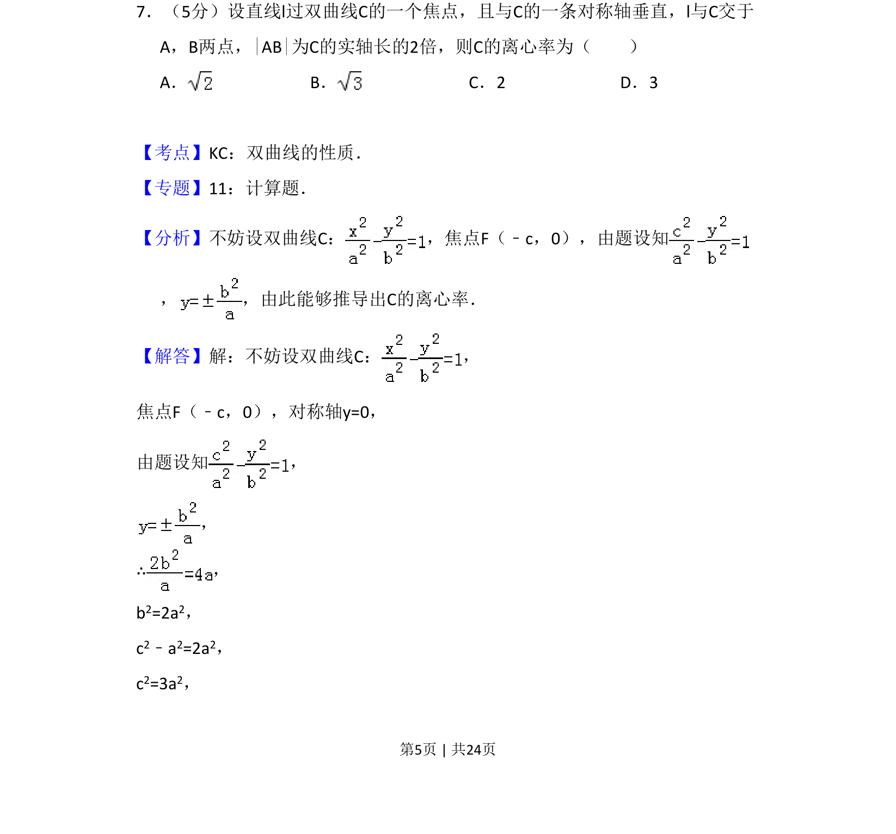
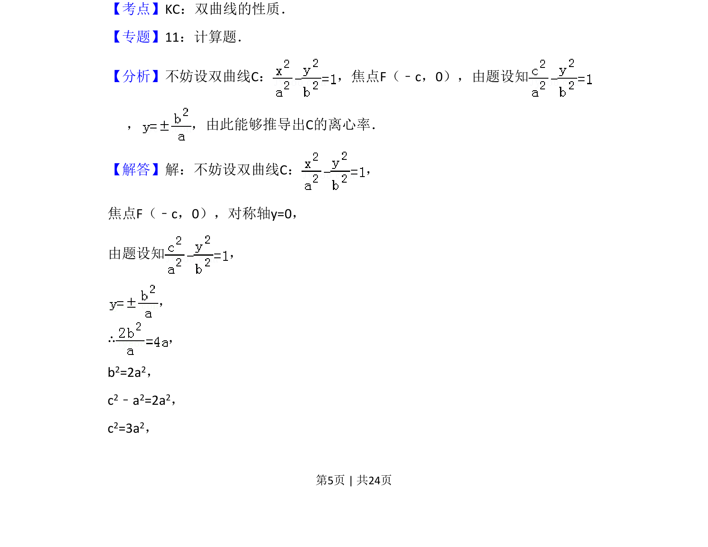
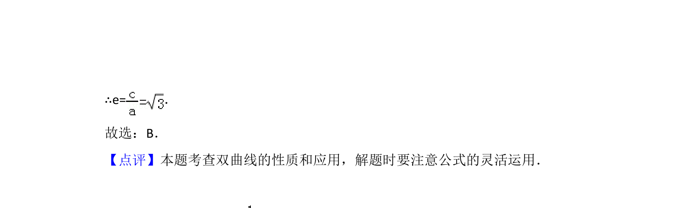

考点：双曲线性质 弦长 离心率

该题通过直线与双曲线相交得到弦长关系，求双曲线离心率。


📄 原 PDF 第 5 页：
素材/真题/吉林/2008-2024·（吉林）数学高考真题/2011年高考数学试卷（理）（新课标）（解析卷）.pdf
7．（5分）设直线l过双曲线C的一个焦点，且与C的一条对称轴垂直，l与C交于 A，B两点，|AB|为C的实轴长的2倍，则C的离心率为（ ） A．B．C．2 D．3
【考点】KC：双曲线的性质．菁优网版权所有 【专题】11：计算题． 【分析】不妨设双曲线C： ，焦点F（﹣c，0），由题设知 ， ，由此能够推导出C的离心率． 【解答】解：不妨设双曲线C： ， 焦点F（﹣c，0），对称轴y=0， 由题设知 ， ， ∴， b2=2a2， c2﹣a2=2a2， c2=3a2，